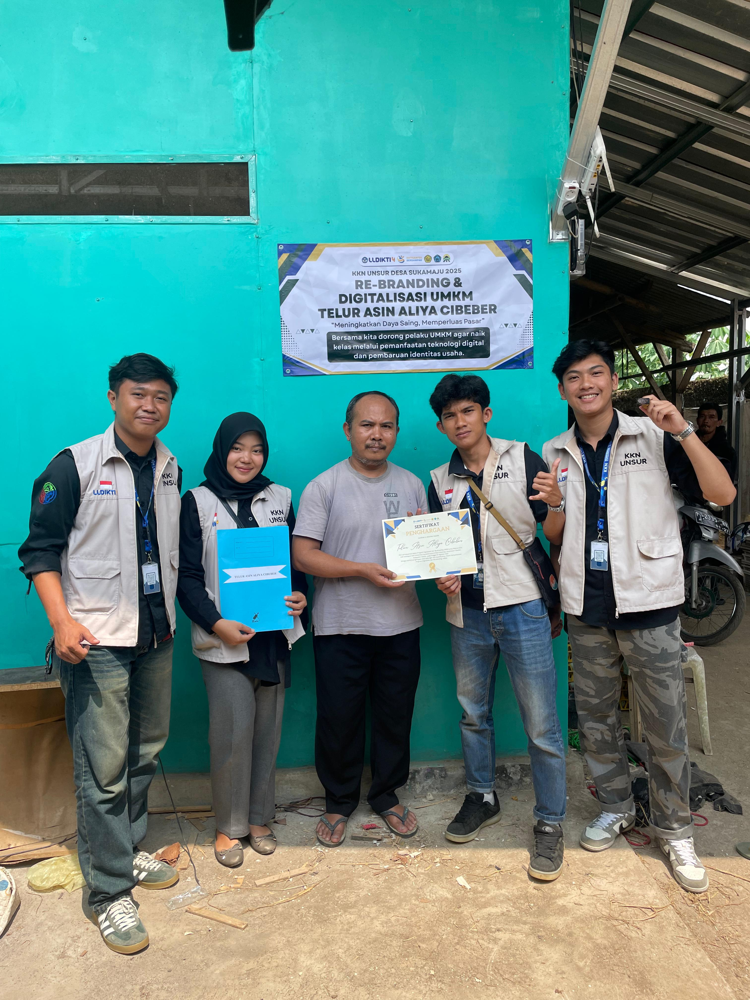

RE-BRANDING DAN DIGITALISASI MARKETING UMKM DI DESA SUKAMAJU
Sukamaju - Mahasiswa Kuliah Kerja Nyata (KKN) dari Universitas Suryakancana (Unsur) angkatan 2025 meluncurkan program pemberdayaan ekonomi yang berfokus pada Usaha Mikro, Kecil, dan Menengah (UMKM) di Desa Sukamaju, Kecamatan Cibeber. Melalui program bertajuk "Rebranding dan Digitalisasi Marketing", para mahasiswa berupaya mendongkrak daya saing produk-produk lokal agar mampu menembus pasar yang lebih luas.
Program ini lahir dari pengamatan bahwa Desa Sukamaju memiliki banyak produk unggulan dengan cita rasa otentik, namun masih terkendala oleh kemasan yang sederhana dan pemasaran yang bersifat konvensional.
"Kami melihat potensi yang luar biasa di sini. Produknya enak dan berkualitas, hanya butuh sedikit sentuhan modern agar bisa bersaing," ujar salah seorang mahasiswa koordinator program KKN. "Tugas kami adalah membantu 'memoles' potensi tersebut agar kilaunya terlihat oleh lebih banyak orang."
Fokus utama program ini adalah memberikan wajah baru (rebranding) melalui pembuatan logo dan desain kemasan yang lebih profesional, serta membuka akses pasar baru melalui pemasaran digital (digitalisasi marketing) di media sosial dan platform e-commerce.
Ada lima UMKM unggulan yang menjadi pilot project dalam program ini, yaitu: Kerupuk Rambak Doa Ibu, Telur Asin Aliya Cibeber, Aneka Keripik Berkat Doa Ibu, Emping Bee Ah Melinjo, Aneka Manisan Kering Bu Pipih.
Para pelaku usaha menyambut antusias program ini. Ibu Pipih, pemilik usaha aneka manisan kering, mengungkapkan harapannya. "Kami senang sekali ada adik-adik mahasiswa yang mau membantu. Selama ini kami hanya menjual di sekitar sini saja. Dengan adanya bantuan ini, kami berharap produk kami bisa dikenal orang di luar Sukamaju," tuturnya.
Melalui pendampingan intensif, program ini tidak hanya bertujuan untuk meningkatkan penjualan dalam jangka pendek, tetapi juga memberikan bekal literasi digital kepada para pemilik usaha agar mereka dapat melanjutkan pemasaran secara mandiri di masa depan. Sinergi antara semangat inovatif mahasiswa dan kearifan lokal para pengusaha ini diharapkan dapat menjadi motor penggerak ekonomi baru bagi Desa Sukamaju.